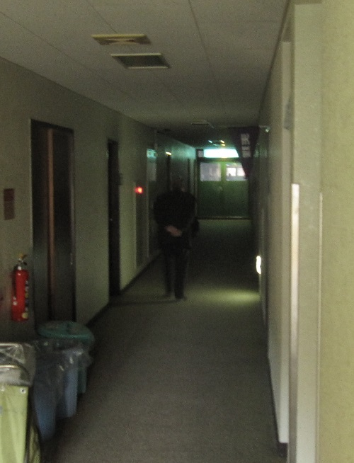
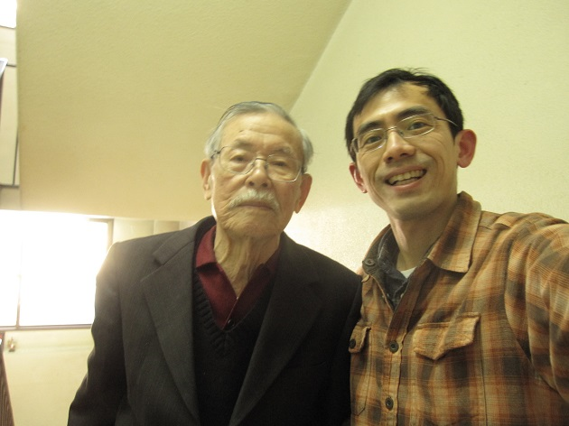

首頁 │ 三原典 │ 演講稿 │ 教理 │ 文章 │ 學習資源
西伯利亞的考驗 謝匡宇  晚上值班的時候，電話響起，對方要找借宿在二樓的加藤先生。轉接給加藤先生，加藤先生不知道怎麼使用電話，因此向他說明了一次。 隔天，同事在值班的時候，電話又打來，同樣的，又跟加藤先生再說明了一次。當時在場的我心想，這位老先生的記憶力似乎不太好，不然就是手上有事情在忙。 早上，加藤先生總是很早就到食堂用餐。問他來天理做什麼，他說有個俄國朋友來，因此來天理與他會面，想學俄文。先吃完飯，先生問我盤子要怎麼處理，我指著廚房的水槽說:「我們都是自己拿去洗。」老先生滿臉笑容說謝謝就走向廚房。 老先生的臉上總是洋溢著喜悅的表情。佝僂的身影，他的背通常只有年輕做過苦力的老阿嬤才有他那樣的彎曲度，但我想老先生也許是花太多時間在念書。吃早 餐時他已經穿著西穿外套，似乎隨時都要出門的樣子。那外實內瘦的樣子讓我想起我過世的爺爺，日本時代在公家機關做過事的他，到老年時只要是出門穿著還是很 體面。老先生看起來有點過時，像是我小時候常見到老一輩日本教育下的台灣人。但他的眼神異常年輕，像是充滿夢想的少年一般閃閃發亮。我猜他年約75，年輕 時候移民巴西，或因為某種原因跟日本社會脫節，所以還保留老日本人的氣質。 飯後，詰所夫人說，加藤先生是大阪民族博物館的教授，專長是俄語，聽海外部裡的人說他是「だいぶ偉い先生」(地位很高的老師)。 好奇之下我上網找他的資料。不得了。加藤九祚，1922年韓國出生，山口縣長大，戰爭期間在滿州服役(中國東北)。1945年戰爭結束後被蘇聯軍帶 走，到西伯利亞做苦工。當時被拘留在蘇聯的日本人人數無正式統計，但據信約有60萬人，其中約1/10死亡。加藤先生在那裡學會俄文，回國以後繼續求學， 專長是西伯利亞等俄國境內民族研究，成為這方面的權威。2011年獲頒國家勳章。目前仍然在從事考古等研究工作。 知道老先生的背景後，我突然覺得很不好意思，早上還讓他自己去洗碗… 這幾天我想跟他請教，請他分享自己的人生經驗。但一如其他日本人，加藤先生也不善於言詞，只是很簡短地回答我問的問題。他說1945年被帶到西伯利亞 替蘇聯蓋鐵路，一直到將近5年後的1950年才回到日本。「你有想過如果死在西伯利亞怎麼辦嗎?」老先生一派豁達地說：「哦~我每天都在想。」「西伯利亞 冬天這麼冷，有辦法工作嗎？」「超過零下40度就不用工作。」「有沒有想過逃走？有人成功逃走嗎？」「沒有。」但是網路上看到老先生的談話，當時他身邊有 3位日本人曾經試圖逃走。3個人當中，其中2個人在途中把一位同伴殺掉，當食物來吃。後來那兩個人在被圍捕的時候因抵抗被處決。 「在那裡有寫信給家人嗎?」「沒有。沒辦法寫。」「所以家人都不知道您是活還是死？」「是的。」「回來的時候家人都嚇一跳吧？」「嗯。」老先生似乎不 想再多談下去，但是臉上並沒有不愉快的表情。「您到這麼大的年紀，繼續做研究不會累嗎?」「是會累。但是除此之外我什麼都不會。」 有不少日本人在戰爭的時候被派到東南亞或東北，碰過許多非人道的事情，他們在戰爭之後保持沉默，一輩子不跟人提在軍中遭遇的事情。就像獅子與獵物之間 進行殊死纏鬥，那是人在面臨生存或死亡的情況下做出的抉擇，超出了正常人類社會所遵守的規範。特別是在重視形式端正的日本社會裡，談論這些事情需要更大的 勇氣。  但老先生依然開朗。他後來成為學者，並且多次回到西伯利亞進行研究工作，也將他在西伯利亞的遭遇登在雜誌，並出版成書，對人的熱情並沒有因為戰爭及苦勞而減少。95歲的高齡，眼神依然散發出燦爛的光彩。 用天理教的角度來說，加藤先生是去西伯利亞，當了5年蘇聯政府的青年。他熬過最苦的日子，也活了過來。當時埋下的種子，在往後的人生中結成甜美的果實。經歷過那段日子，人生旅途上不再知道什麼是痛苦了吧。 幾次在早餐時間談話，老先生完全感覺不到大學者的架子。直到我問他「能不能與您合照？」時，老先生沒有猶豫，馬上面對相機鏡頭，完全不像上年紀的人面對鏡頭時的靦腆。這是這幾天中，我第一次感覺到老先生的機靈，也說明了他的不平凡。(2016-0211) |